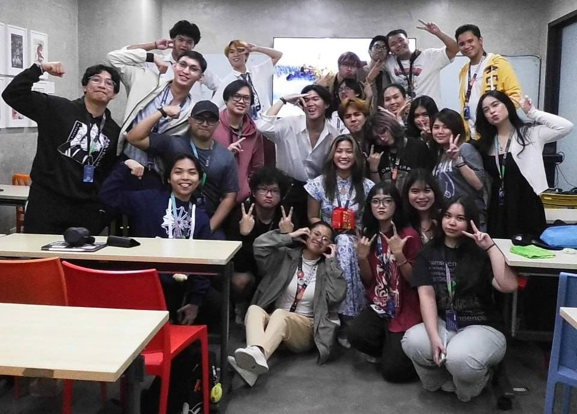
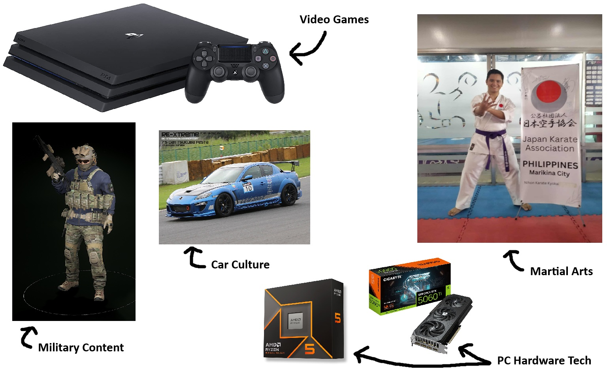
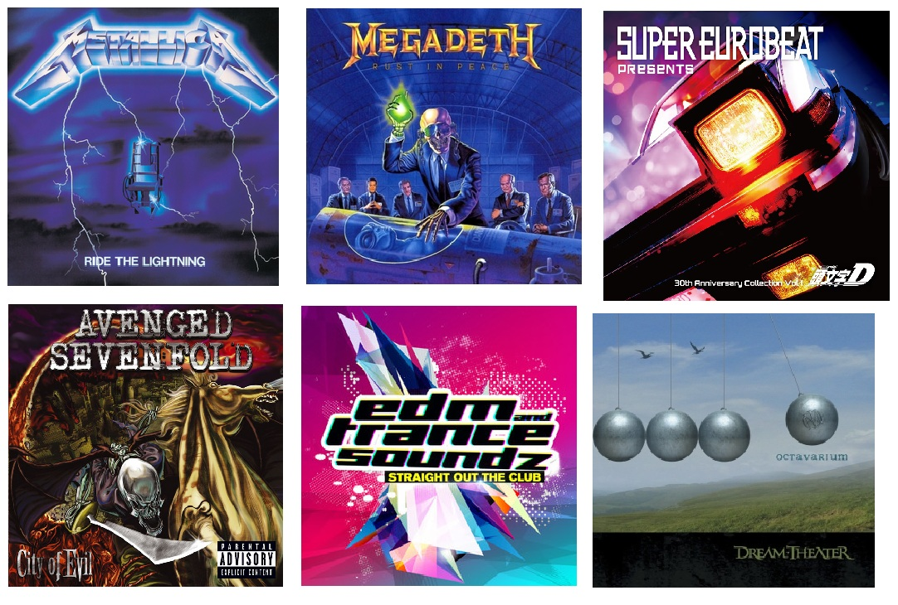

November 29, 2025
Up until this point, I'm a fish out of water since I came from BMA. But everyone in my batch are so helpful that I can't help but feel appreciated. I was in a massive slump before CIIT and I'm grateful to God for giving me another chance to start over.
My proudest work so far is my finals for Computer Programming, in which I finished before its due date. Check it out below.


As most do, I like video games, martial arts, military content, automotive culture, and hardware tech related to desktop computers. These are rather interesting niches that I've picked up along the way but they are intriguing to me so that's that.

I enjoy listening to old school hip hop & rap but not as much as before, heavy metal and its many subgenres that spawned off of it, an electronic dance music (EDM) subgenre called "Trance", eurobeat, 80's & 90's classics, easy rock, and mainly anything that makes me go "Ayo?".
Pretty much the same as what I said in "What Are My Likes?" section above. But to elaborate on one of them: I study about various topics about automotive vehicles like my recent obsession, BMW cars, and I also train in Shotokan-Karate under the Japan Karate Association.

Originally, I wanted to be an animator only, but life threw a curveball at me twice and I had to scramble to get back on my feet. Then, I decided to take up game development to become a game designer or something close to a creative role (I heard that it may also include animation on the side which was the best option for me).
As mentioned in the previous section before this, I wanted to be closer to a role that leans into creatives and game design since I want to bring a vision of mine to life. BSEMC being a multi-skills course is a huge bonus that I couldn't avoid after good word-of-mouth from my friends.
That depends if something really happens to me that'd force me out of school. I promised that I wouldn't stop until I graduate, regardless of how long it takes me to finish all courses in my curriculum.